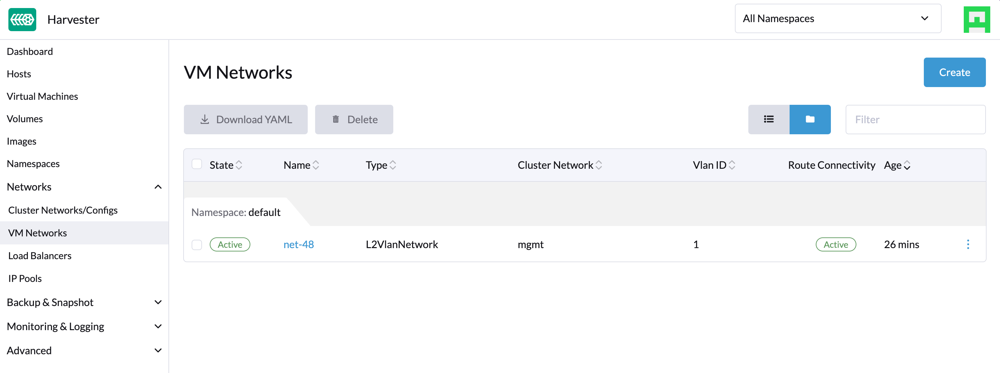

|
Dieses Dokument wurde mithilfe automatisierter maschineller Übersetzungstechnologie übersetzt. Wir bemühen uns um korrekte Übersetzungen, übernehmen jedoch keine Gewähr für die Vollständigkeit, Richtigkeit oder Zuverlässigkeit der übersetzten Inhalte. Im Falle von Abweichungen ist die englische Originalversion maßgebend und stellt den verbindlichen Text dar. |
VM DHCP Controller (Experimentell)
|
harvester-vm-dhcp-controller ist ein experimentelles Add-on. Es ist nicht im ISO enthalten, aber Sie können es aus dem |
Sie können IP-Pool-Informationen konfigurieren und IP-Adressen an VMs, die auf SUSE Virtualization Clustern laufen, mit der integrierten Managed DHCP-Funktion bereitstellen. Diese Funktion, die eine Alternative zum eigenständigen DHCP-Server darstellt, nutzt das vm-dhcp-controller Add-on, um die Implementierung von Gastclustern zu vereinfachen.
|
SUSE Virtualization verwendet das geplante Infrastruktur-Netzwerk, daher müssen Sie sicherstellen, dass die Netzwerkverbindung verfügbar ist und die IP-Pools im Voraus planen. |
Einzigartige Funktionen
-
DHCP-Leases werden in etcd als die einzige Quelle der Wahrheit im gesamten Cluster gespeichert.
-
Jede der Leases ist von Natur aus statisch und funktioniert gut mit Ihrer aktuellen Netzwerkinfrastruktur.
-
Die Managed DHCP-Agenten können weiterhin DHCP-Anfragen für bestehende Entitäten bedienen, selbst wenn die Steuerungsebene des Clusters nicht mehr funktioniert, wodurch sichergestellt wird, dass das Netzwerk Ihrer virtuellen Maschinenlast verfügbar bleibt.
Nutzungsbeschränkungen
-
Die Managed DHCP-Funktion funktioniert nur mit den in den
VirtualMachineCRs angegebenen Netzwerkschnittstellen. Netzwerkschnittstellen, die in der virtuellen Maschine erstellt werden, werden nicht unterstützt. -
IP-Adressen werden nicht zugewiesen oder freigegeben, wenn Sie Netzwerkschnittstellen nach der Erstellung der virtuellen Maschine hinzufügen oder entfernen. Die tatsächlichen MAC-Adressen werden in den
VirtualMachineNetworkConfigCRs aufgezeichnet. -
Die DHCP RELEASE-Operation wird derzeit nicht unterstützt.
-
Aktualisierungen der IP-Pool-Konfiguration treten erst in Kraft, nachdem Sie die relevanten Agenten-Pods manuell neu gestartet haben.
Installation und Aktivierung des Add-ons
Sie können das Add-on installieren, indem Sie den folgenden Befehl ausführen:
kubectl apply -f https://raw.githubusercontent.com/harvester/experimental-addons/main/harvester-vm-dhcp-controller/harvester-vm-dhcp-controller.yaml|
Das Add-on kann die cluster-spezifischen Service-CIDRs nicht dynamisch erkennen und verwendet standardmäßig Wenn Ihr Cluster einen anderen Service-CIDR verwendet, müssen Sie ihn ausdrücklich im Beispiel: Sie können den Service-CIDR Ihres Clusters mit dem folgenden Befehl überprüfen: |
Nach der Installation aktivieren Sie das Add-on auf dem Dashboard Bildschirm der SUSE Virtualization UI oder mit dem Kommandozeilenwerkzeug kubectl.

Verwendung des Add-ons
-
Auf dem Dashboard Bildschirm der UI erstellen Sie ein VM-Netzwerk.

-
Erstellen Sie ein
IPPoolObjekt mit dem Kommandozeilenwerkzeug kubectl.cat <<EOF | kubectl apply -f - apiVersion: network.harvesterhci.io/v1alpha1 kind: IPPool metadata: name: net-48 namespace: default spec: ipv4Config: serverIP: 192.168.48.77 cidr: 192.168.48.0/24 pool: start: 192.168.48.81 end: 192.168.48.90 exclude: - 192.168.48.81 - 192.168.48.90 router: 192.168.48.1 dns: - 1.1.1.1 leaseTime: 300 networkName: default/net-48 EOF -
Erstellen Sie eine VM, die mit dem zuvor erstellten VM-Netzwerk verbunden ist.

-
Warten Sie, bis das entsprechende
VirtualMachineNetworkConfigObjekt erstellt wurde und die MAC-Adresse der Netzwerkschnittstelle der VM auf das Objekt angewendet wurde. -
Überprüfen Sie das
.statusFeld derIPPoolundVirtualMachineNetworkConfigObjekte und vergewissern Sie sich, dass die IP-Adresse zugewiesen und der MAC-Adresse zugeordnet ist.$ kubectl get ippools.network net-48 -o yaml apiVersion: network.harvesterhci.io/v1alpha1 kind: IPPool metadata: creationTimestamp: "2024-02-15T13:17:21Z" finalizers: - wrangler.cattle.io/vm-dhcp-ippool-controller generation: 1 name: net-48 namespace: default resourceVersion: "826813" uid: 5efd44b7-3796-4f02-947e-3949cb4c8e3d spec: ipv4Config: cidr: 192.168.48.0/24 dns: - 1.1.1.1 leaseTime: 300 pool: end: 192.168.48.90 exclude: - 192.168.48.81 - 192.168.48.90 start: 192.168.48.81 router: 192.168.48.1 serverIP: 192.168.48.77 networkName: default/net-48 status: agentPodRef: name: default-net-48-agent namespace: harvester-system conditions: - lastUpdateTime: "2024-02-15T13:17:21Z" status: "True" type: Registered - lastUpdateTime: "2024-02-15T13:17:21Z" status: "True" type: CacheReady - lastUpdateTime: "2024-02-15T13:17:30Z" status: "True" type: AgentReady - lastUpdateTime: "2024-02-15T13:17:21Z" status: "False" type: Stopped ipv4: allocated: 192.168.48.81: EXCLUDED 192.168.48.84: ca:70:82:e6:84:6e 192.168.48.90: EXCLUDED available: 7 used: 1 lastUpdate: "2024-02-15T13:48:20Z"$ kubectl get virtualmachinenetworkconfigs.network test-vm -o yaml apiVersion: network.harvesterhci.io/v1alpha1 kind: VirtualMachineNetworkConfig metadata: creationTimestamp: "2024-02-15T13:48:02Z" finalizers: - wrangler.cattle.io/vm-dhcp-vmnetcfg-controller generation: 2 labels: harvesterhci.io/vmName: test-vm name: test-vm namespace: default ownerReferences: - apiVersion: kubevirt.io/v1 kind: VirtualMachine name: test-vm uid: a9f8ce12-fd6c-4bd2-b266-245d8e77dae3 resourceVersion: "826809" uid: 556440c7-eeeb-4daf-9c98-60ab39688ba8 spec: networkConfig: - macAddress: ca:70:82:e6:84:6e networkName: default/net-48 vmName: test-vm status: conditions: - lastUpdateTime: "2024-02-15T13:48:20Z" status: "True" type: Allocated - lastUpdateTime: "2024-02-15T13:48:02Z" status: "False" type: Disabled networkConfig: - allocatedIPAddress: 192.168.48.84 macAddress: ca:70:82:e6:84:6e networkName: default/net-48 state: Allocated -
Überprüfen Sie die serielle Konsole der VM und vergewissern Sie sich, dass die IP-Adresse korrekt auf der Netzwerkschnittstelle (über DHCP) konfiguriert ist.

Pods und CRDs
Wenn das Add-on aktiviert ist, laufen die folgenden Arten von Pods:
-
Controller: Gleicht CRD-Objekte ab, um die Zuweisung und Zuordnung zwischen IP- und MAC-Adressen zu bestimmen. Die Ergebnisse werden in den
IPPoolObjekten gespeichert. -
Webhook: Validiert und verändert CRD-Objekte beim Empfang von Anfragen (Erstellung, Aktualisierung und Löschung)
-
Agent: Bedient DHCP-Anfragen und stellt sicher, dass der interne DHCP-Leasing-Speicher auf dem neuesten Stand ist. Dies wird erreicht, indem das spezifische
IPPoolObjekt synchronisiert wird, mit dem der Agent verbunden ist. Agenten werden nach Bedarf erstellt, wann immer Sie neueIPPoolObjekte erstellen.
Das Add-on führt die folgenden neuen CRDs ein:
-
IPPool(ippl) -
VirtualMachineNetworkConfig(vmnetcfg)
IPPool CRD
Die IPPool CRD ermöglicht es Ihnen, Informationen über IP-Pools zu definieren. Sie müssen jedes IPPool-Objekt einem bestimmten NetworkAttachmentDefinition (NAD) Objekt zuordnen, das zuvor erstellt werden muss.
|
Mehrere CRDs mit dem Namen |
Beispiel:
apiVersion: network.harvesterhci.io/v1alpha1
kind: IPPool
metadata:
name: example
namespace: default
spec:
ipv4Config:
serverIP: 192.168.100.2 # The DHCP server's IP address
cidr: 192.168.100.0/24 # The subnet information, must be in the CIDR form
pool:
start: 192.168.100.101
end: 192.168.100.200
exclude:
- 192.168.100.151
- 192.168.100.187
router: 192.168.100.1 # The default gateway, if any
dns:
- 1.1.1.1
domainName: example.com
domainSearch:
- example.com
ntp:
- pool.ntp.org
leaseTime: 300
networkName: default/example # The namespaced name of the NAD objectNachdem das IPPool Objekt erstellt wurde, initialisiert der Controller den Reconciliationsprozess, der das IP-Zuweisungsmodul und den Agenten-Pod für das Netzwerk erstellt.
$ kubectl get ippools.network example
NAME NETWORK AVAILABLE USED REGISTERED CACHEREADY AGENTREADY
example default/example 98 0 True True TrueVirtualMachineNetworkConfig CRD
Die VirtualMachineNetworkConfig CRD ähnelt einer Anfrage zur Vergabe von IP-Adressen und ist mit NetworkAttachmentDefinition (NAD) Objekten verbunden.
Ein Beispiel für ein VirtualMachineNetworkConfig Objekt sieht wie folgt aus:
apiVersion: network.harvesterhci.io/v1alpha1
kind: VirtualMachineNetworkConfig
metadata:
name: test-vm
namespace: default
spec:
networkConfig:
- macAddress: 22:37:37:82:93:7d
networkName: default/example
vmName: test-vmNachdem das VirtualMachineNetworkConfig Objekt erstellt wurde, versucht der Controller, eine Liste ungenutzter IP-Adressen aus dem IP-Zuweisungsmodul für jede aufgezeichnete MAC-Adresse abzurufen. Die IP-MAC-Zuordnung wird dann im VirtualMachineNetworkConfig Objekt und den entsprechenden IPPool Objekten aktualisiert.
|
Die manuelle Erstellung von |